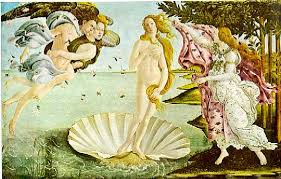

文藝復興興起自義大利，十四至十六世紀為文藝復興發展的重要地帶，之所以是義大利這個區域，一原因是此地是古羅馬之發源地，與古典文化關係十分密切，再來是其地理位置處於地中海中央，海運便利，十字軍東征時歐洲人對東方的絲織品、寶石與香料等商品與文物感到好奇，進而積極將東方特色貨品引入歐洲市場，促進東西方商業及文化上的交流。另外，十字軍東征耗費了大量人力以及資金，開始整頓軍武與嘗試推動徵稅制度，使得社會安定許多，而此時農奴也可透過捐錢來獲得自由，這些皆動搖了中世紀之封建制度，商人勢力日益擴大，商業城鎮紛紛獨立。因此雖文藝復興時期之義大利半島並非統一的國家，貿易鼎盛城邦﹝例：米蘭、佛羅倫斯﹞的貴族、富商贊助文藝活動的行為，亦促使文藝復興的發展。
文藝復興﹝the Renaissance﹞，「Renaissance」一詞源自義大利文「Rinascita」為再生、重生的意思，是指人文主義與自由精神的再生，人們關注的焦點與創作內容不再侷限於上帝等濃厚的基督教出世態度，轉向於以人為本的觀念，強調自我意識與個性的重要，並以古希臘、羅馬精神為榜樣，且將「自然」與「人」結合在一起。
文藝復興開始的確切時間各學派的學者都有自己的說法，而「當人們醒悟到自己已經不再活在中世紀的時代裏，這也就是文藝復興開始的時候。」﹝張心龍，1999﹞是最普遍能夠被接受的看法，雖然攏統，卻也明白點出此時期的重要觀念，因中古時期的人們並沒有真正意識到自己生存在世上的價值。
﹝一﹞、喬托
喬托﹝Giotto di Bondone﹞為一名義大利佛羅倫斯藝術家，小時後因偶然展露了他驚人的繪畫天賦，而被另一位鑲崁畫家契馬布耶收為徒弟，此為佛羅倫斯流傳的一則小故事，但根據記載，喬托的老師是另一位名叫彼特羅卡瓦利尼的鑲崁畫家。「喬托風格真貴之處是忠於人文與自然，反對從拜占庭傳來的人工化風格。」﹝張心龍，1999﹞，相較於拜占庭畫派之鑲崁畫的呆版、僵硬，喬托的創作生動許多，以寫實為主的他，將各種物品描繪得栩栩如生，大小比例能相互協調，並且將人喜怒哀樂的表情描繪於畫中，強調自然與人文，是一項偉大的突破。另外，喬托的宗教畫作也較為世俗化，在阿連那禮拜堂的濕壁畫其中一部分「悲慟基督之死」，描繪基督耶穌的身體剛從十字架上拿下，信徒圍繞在祂身旁，不同於中古時期的表現方式，喬托筆下的人物各自顯露出自己的情感，構圖也有敘事性。另一幅名作「聖母登極」畫中的聖母與聖嬰也較生動，披衣上描繪的皺褶亦是平面藝術的一項突破。部分學者主張文藝復興應始於喬托，因他是首位賦予畫中人物情感的畫家。

二、波堤切利
波提切利﹝Sandro Botticelli﹞，佛羅倫斯藝術家，所處的年代為十五世紀末期，曾到羅馬替西斯汀教堂作畫，由他監督製作的濕壁畫位在教堂窗戶下的牆壁，但人們的目光往往被天花板上米開朗基羅的作品吸引，而忽略了他的畫作。波提切利最著名的作品非「維納斯的誕生」莫屬，當時波提切利是受了羅倫佐‧梅第奇﹝Medici﹞委託才創作了這項作品，它是一則古希臘羅馬神話，維納斯站在貝殼中從大海中緩緩升起，右邊有另一位女神拿著一件華麗的衣裳想為她披上，整幅圖呈現一種輕飄飄的感覺，雖然這與文藝復興初期重視的透視理論不相符，但不影響整體的視覺感受。另外，當時普遍的作畫內容多為聖經中的人物，但這幅畫卻是以古典神話為主題，「神話不只是傳教，它也是古典時期人們的智慧結晶，他們若想恢復往日羅馬榮光就必須瞭解神話。」﹝章伊秀、邱建一、水瓶子，2010﹞，可以說是擺脫了從前創作總圍繞著宗教的壓抑表現。波提切利的創作幾乎與宗教脫離關係，這是他的特點，亦是往後受到迫害的原因之一。
\ 或許可以將文藝復興盛期理解成一個天才輩出的時代，他們展現的藝術風格將文藝復興推入一個黃金時期。
一、米開朗基羅
米開朗基羅﹝Mi-chelangelo Buonarroti﹞，一位傲氣與才氣兼具的佛羅倫斯藝術家，「大衛像」是佛羅倫斯政府委託他的一項巨大工程，當年大衛將巨人歌利亞打倒時還只是個小孩，他卻將大衛雕塑成一個肌肉發達的成熟樣貌，右手拿著石頭，左手舉著發彈器，身軀向後傾斜，呈現出蓄勢待發的模樣。米開朗基羅十分擅長雕塑男性裸體，更曾為了更了解人體構造而解剖遺體，他將「大衛像」雕塑得栩栩如生，同時也將大衛的冷靜沉著詮釋得相當好。西斯汀教堂的天花板亦是米開朗基羅的一項偉大創作，實際上當年他非常堅定的拒絕接下這份工作，並清楚地向教皇表明自己是雕刻家，不是一名畫家，他也曾暗自懷疑這是個陷害他的伎倆，無奈的是教皇始終不肯收回命令，米開朗基羅只好接下了這份艱鉅的任務，他將自己關在教堂裡，成天躺在高架上引頸作畫，花了四年半的時間完成了這件令人驚嘆的畫作，其中「最後的審判」表達出對當時政局動盪的惶恐、不安。

在當時佛羅倫斯是一個商業貿易發達的城邦，統治此地區的家族為梅第奇，，他們亦是一個經營許多銀行的富商，早期有些貴族面臨財政困難時經常會向這個家族借款，然而當貴族們無法償還貸款時，便只能與之交換利益，導致後來貴族勢力幾乎瓦解，而商人們組織了商會，團結之下商人的勢力比以往龐大，更產生了一股和平的社會氛圍。生活富足之後，人們開始注重心靈層面的感受，世力龐大的家族開始資助藝術家，藝術家所有的生活費都由他們負責，另外他們為了彰顯自己的權勢，時常聘請藝術家為他們作畫、裝飾建築物，不過由於藝術家接受他們的贊助，以至於所作的畫都須合乎贊助者的想法。不幸的是，有一年佛羅倫斯發生政變，梅第奇執政家族被推翻，受梅第奇資助的波提切利也因而受到衝擊，從「維納斯的誕生」這幅政變前的作品亦看得出一絲憂鬱之感。關於米開朗基羅濕壁畫「最後的審判」，它訴說的是當時羅馬已不再如昔日興盛，全歐洲亦陷入戰爭的危機中，因而表露初恐懼的情緒。
此時期的藝術家在創作上有些許的共通點，他們的中心思想多崇尚人文主義，因此所創作出來之作品較富有感情，甚至能表達出自己內心的情緒，使整個作品呈現出活潑、靈活的樣貌。主題亦不再圍繞著宗教打轉，開始從各方面取才，頗有挑戰教會權勢的意味。
文藝復興是段既複雜又神祕的時期，它能激發人們得好奇心來了解此時代的一切。在看似平靜、柔美的作品背後，卻隱藏了不為人知的背景故事，每樣創作總會隱藏著當初作畫者的內心世界，而心境感受或多或少會受環境影響，若非仔細地認識一次，眼睛所見到的永遠只會是表面細緻的工法，明白他們的創作思想後再將那些作品欣賞一次，很自然地能用不一樣的角度看待，感受也變得相當不同。文藝復興的目的是想要重現黑暗時期之前的古希臘、羅馬精神，並非模仿，而是創造出與當時同樣燦爛、耀眼的藝術風格。